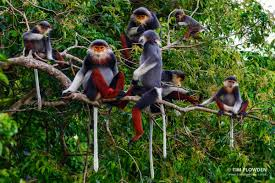

Doucs
 Los doucs son primates que habitan en Vietnam y otros países del sudeste asiático. Son animales en peligro de extinción y están amenazados por la deforestación.
Amenazas
La deforestación es una de las principales amenazas para los doucs. La guerra de Vietnam y la posterior falta de atención a la protección de la fauna silvestre han contribuido a la desaparición de los bosques.